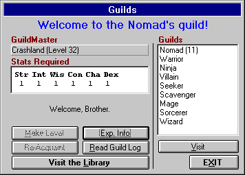

The City: Guilds
"Even strength in numbers cannot overcome the advanced teachings of a guild!"
- "Bartow", Master of the Warrior's Guild

In order to advance in a guild, a character must be acting as a member of that guild while gaining the experience required to make a level within that guild. This means that a character can only work on one guild at a time. The experience that a character gains is always for the current guild - not for others.
Every character is a member of the Nomads guild when they start the game. A character may join one other guild free of charge (provided they meet the requirements), but thereafter they must pay to join a new guild. Guilds that cost the most to join usually provide either a high level or a wide range of spells and abilities. The price may quite often seem hefty, but it's worth it in the end. Guilds that cost the most to join usually provide either the highest level for select spells & abilities, or the widest range (but not necessarily the highest level) of spells & abilities. For more information, see the next section, Guild Statistics.
Each guild has a spell book which determines which spells the specific guild has access to. As a character joins other guilds, their spell book will grow in size, giving access to all the spells they have learned. If a character joins more than one guild that share the same spell (i.e. Healer and Wizard both have a spell called 'Power'), the most powerful guild that has access to that specific spell will be default.
You may switch between guilds only while in the city. You may not switch guilds if you are wearing cursed items, or if you are wearing any items aligned opposite to your character.
When a character is as a member of a guild, they are usually assigned a special title relating to their level and experience in the guild. In the Character Statistics Window, this title is displayed instead of the guild name. Even though the title may be different from the guild name, the character is still acting as a member of that guild.
There are a number of options available within the guilds. You can 'reacquaint' with a guild if you want to be an active member of that guild again (provided that you are already a member). When you qualify, you may 'make level' in a guild. Making level within a guild requires that you gain a certain amount of experience by killing monsters. The guild will also require a fee in gold.
As you achieve higher guild levels, you may gain additional hits (if the guild you are making a level in is the highest guild level of all guilds that you are a member of). Your attack and defense may also rise. This is dependent on what "level" of A/D the guild's teachings has put you at compared to the A/D levels of other guilds. Nomad's gain A/D the quickest, but stop raising a character's A/D much sooner than, say, the Warrior's guild. For example, if a Character is a Level 30 Nomad and has gained 75/75 A/D from the Guild's teachings and joins the Sorcerers guild, the character's A/D will not raise (from making levels) until the Sorcerer's teachings raise the A/D above that of the Nomad's A/D level of 75/75.
Quests
As you gain levels, you may be assigned a 'quest' of a certain item you must return with or a monster you must slay before you can make the next level.
A quest for a monster is completed the instant the creature is slain. A quest for an item is completed when the character returns to the guild with the item and makes a level. The quested item will then be removed from the character's inventory.
If an explorer is assigned a quest that he or she cannot complete, or does not wish to complete, the character can always file for forfeit of the quest. This can only be done if the character is pinned and has an outstanding quest to complete. If a character does forfeit a quest, they will be demoted a certain number of levels (based on their current level), losing all attack, defense, experience, abilities, and other modifications that were gained between the current guild level and the level that the character is demoted to. Demoted characters are entered into the guilds log as unable to complete their quest.
The Library
One can also visit the Library by clicking on the 'Library' button. This feature is discussed after the Guilds and Guild Statistics.
The Guild Log
One can also read a guild's log by clicking the 'Read Guild Log' button, which will display a collection of actions and events that have occurred in reference to a guilds members. Information includes quests, resurrections, discoveries and more.
Visiting & Joining other Guilds
A character can also 'visit' other guilds and attempt to join, if they meet the criteria (and in some cases, have the gold). One can also get 'experience information' for the current guild (if the character is a member).
To switch between guilds, select the guild you wish to visit from the List Box and press the Visit button. When visiting a guild, you then have the options of attempting to Join (provided your stats, race and alignment meet the guilds requirements) or Reacquaint yourself with the Guild.
Nomad
Nomads are very quick learners, even though they do not try to learn many different abilities. Being good fighters and moderate thieves, Nomads are often found roaming the upper levels of the dungeon.
Warrior
Warriors could care less about spells, but are unmatched in brute fighting ability. Being the quickest to learn how to Critically hit their opponent, they are very good fighters and alone can use the best weapons found in the dungeon.
Ninja
Ninjas are weapons masters and can use almost all weapons including their hands. Since a Ninja desires quickness, they are very specific about the items they use. Ninjas are not allowed to wear most types of armor and other items. However, having access to special weapons that only they can use, Ninjas posses the skills of Critically hitting and Backstabbing their opponents, along with moderate thieving skills.
Thief
Thieves are the best at collecting treasure, although the guild makes sure to get a fair share. Very devoted to stealing, Thieves often lack fighting skill, but make up for it with their treacherous backstabbing. Thieves also have the best magical ability to open any type of sealed or locked container.
Mage
Though they lack the destructive powers of a Sorcerer, Mages makes up for it by having the ability to control powerful monsters to act as companions. They are also fairly adept at killing monsters with a small blade and curing players, though putting a corpse back together is beyond their abilities.
Sorcerer
A Sorcerer lacks the fine mental control and deep concentration of a Mage while in combat, and therefore, their spells tend to blast monsters against the walls instead of charming them. Outside of combat, a Sorcerer can muster up some useful player protection spells, but lacks access to any types of healing spells.
Healer
Healers are very good at putting characters and companions back together again after a rough day in the dungeon. The best at curing, they are also fairly good at killing monsters with a wide variety of damage spells. Healers are valued members of any party since they can fix almost any physical problem, including death.
Wizard
Wizards are very good at teleporting parties around the dungeon, although they cannot always tell where they are going to land. They also have damage spells equivalent to a Healer and protection spells on par with a Sorcerer.
Scavenger
A Scavenger is a cross between a Warrior and a Thief, fighting a little worse than the former and stealing a little worse than the latter. A Scavenger can backstab like a Thief, can be other than neutrally aligned, and can use a few more items than a Thief They are also fairly good at collecting treasure and have access to some of the Thief's magical spells for opening containers.
Seeker
Seekers are very good at moving through the dungeon, being able to levitate, locate other characters, and teleport. They can't directly kill monsters with their magical abilities, but a Seeker does well with a weapon in hand. They are also the best at mapping the dungeon and detecting any types of 'anomalies' they may encounter in the depths.
Paladin
Paladins think of themselves as the heroes of the dungeon, blundering about killing monsters and somewhat successfully healing themselves. Possessing good fighting skills and the ability to critically hit their enemies (though not nearly at the level of a Warrior), one doesn't have to be too smart to be a Paladin, they just have to look good doing it.
Villain
Villains are fallen Thieves, having strayed from the magical and equipment restrictions of the Thief's guild and gone their own way. While working on various poisons, the Villains learned or stole some of the secrets of healing. They also have the ability to Critically hit and Backstab their opponents and aren't bad at collecting treasure.
Keep in mind that a player can be a member of and have the abilities of more than one of the above guilds at a time by joining multiple guilds. However, remember that Race and Alignment is very important in determining a character's limitations in joining Guilds since some guilds will not allow certain Races or Alignments to join. So, if a player wishes to Create a Warrior/Sorcerer/Thief, they should go over the Race Statistics and decide which race would best suit their needs.
A good Starting Combination is a Nomad/Sorcerer or a Nomad/Mage. The Nomad's guild has pretty good fighting/thieving abilities, and the Sorcerer's/Mage's guilds are good for spells. It's good to regulate switching between the two guilds to build up their levels (i.e. make 5 Levels in the Nomad's guild then 5 in Sorcerers, then 5 more in the Nomads, etc.). Keep in mind which guilds give the most hits when making new levels (i.e. the Average hits for a Nomad per level (until Maximum Level (ML) is reached) is 5, vs. the 2 or 3 for Mage, so a character will probably want to gain hit points as a member of the Nomad's guild until Maximum Level (ML) is reached).
Characters with the abilities of Spell Casting, Fighting and Thieving guilds are the most powerful in the game.
Additional Topics:
Move to the next section to see the Guild Statistics.
Move to the previous section to read about Items.
M1: "The Depths of Dejenol" is a Trademark of Decklin's Domain Ltd and is © Copyright 1994-2026 All Rights Reserved